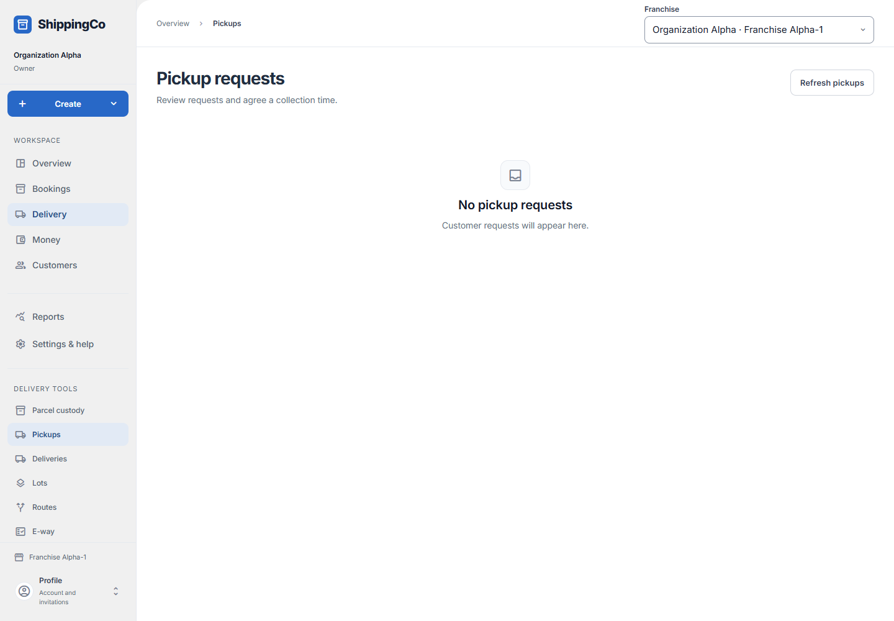

Pickup requests
Agree a time to collect a customer’s parcel.

Before you start
A customer request must already be in the queue. This screen reviews requests; it has no new-request form.
Read the request, then save the decision
- Open Delivery, then Pickups. You can also choose Create, then Arrange a pickup. The list shows the request number, its state, the requested collection window, any agreed window, and whether manual review is needed. Use Refresh pickups for new requests and Load more pickups for older rows.
- Select Review pickup on the correct row. Check the collection address, verified WhatsApp contact, origin, destination, parcel weight and service. If contact is unavailable, review the original customer conversation before agreeing a time.
- Decision defaults to Accept. Enter Agreed start and Agreed end in your local time. Start must be in the future and within 30 days; end must be after start and no more than 24 hours later.
- Tick the capacity confirmation only after checking collection capacity and agreeing the window with the customer. If a manual-handling reason is shown, review it and tick the extra confirmation.
- Choose Decline when the request cannot be accepted. The agreed-time fields are not needed for this choice. Select Save decision once and check the updated state.
- The decision form is shown for submitted requests and permitted staff. An accepted request is not a booking and does not guarantee that a courier will arrive.
- After saving, check Customer message status separately. A failed, suppressed or uncertain message can leave the pickup decision saved. Ask an administrator to review message recovery instead of saving the same decision again.
Quick steps
- Open Pickup requests.
- Select Review pickup. Read the address, contact, parcel and requested time.
- Choose Accept or Decline. For Accept, agree the time with the customer and check your team can collect it.
- Complete the checks and select Save decision.
Fields on this screen
- Decision: Accept or Decline the request.
- Agreed start (your local time): Required to accept. Choose a future time within 30 days.
- Agreed end (your local time): Required to accept. Later than the start, and no more than 24 hours after it.
- I checked capacity and agreed this window with the customer.: Required to accept. Tick only after both checks are done.
- I reviewed the shipment requiring manual handling.: Shown and required when the request needs manual review.
What happens next
The decision and agreed time are saved. Accepting does not create a booking or guarantee that a courier will arrive.
If you get stuck
- No requests: customer requests have not appeared in this branch yet.
- No decision form: the request may already be handled, or your role cannot decide.
- A failed customer message does not undo the saved pickup decision. Ask an administrator to review it.
About this guide
Checked against the current app source on 1 November 2026. Buttons depend on your access and the current record. This guide does not give extra access.